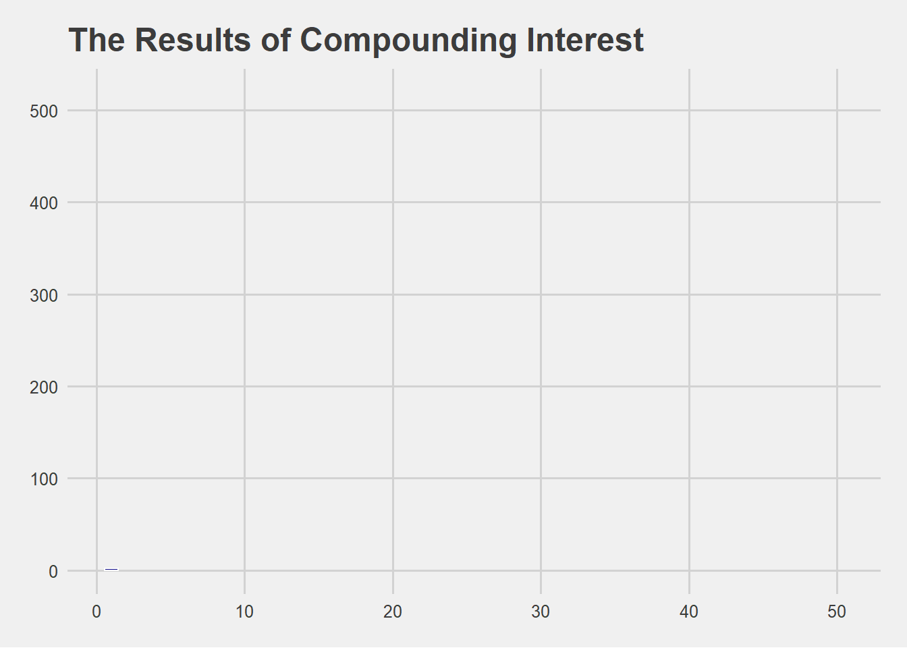

Visualising an important lesson
Libraries
# Thank you to Gary Hutson for the below function
install_or_load_pack <- function(pack){
create.pkg <- pack[!(pack %in% installed.packages()[, "Package"])]
if (length(create.pkg))
install.packages(create.pkg, dependencies = TRUE)
sapply(pack, require, character.only = TRUE)
}
# Next you need to bring in the relevant libraries.
packages <-c("tidyverse",'ggthemes',"gganimate")
install_or_load_pack(packages)
## tidyverse ggthemes gganimate
## TRUE TRUE TRUE
Generate Data
principal <- 50
r <- .05
df <- NULL
for ( i in 1:50){
principal <- round(principal *(1+r))
df <- rbind(df,principal - 50)
}
df <- as.data.frame(df)
df <- cbind(1:50, df)
names(df) <- c("week", "interest")
Visualise it
tibble(df) %>%
ggplot(aes(week,interest,fill=interest,group=week))+
geom_col(col='white',show.legend = FALSE)+
theme_fivethirtyeight()+
#scale_fill_gradient(low = 'red',high = 'chartreuse2')+
scale_fill_viridis_c(option = "plasma")+
labs(title = 'The Results of Compounding Interest')+
transition_reveal(id=week, along=week, range =,keep_last = TRUE)

In other words, stick with it and don’t give up just yet.